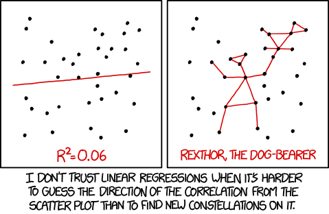

Linear modelling
Exploring how linear models describe relationships between biological variables
What is linear modelling?
Linear modelling is a statistical method that helps us understand how one variable changes in response to another. In biology, we often want to know whether a measured trait, e.g. such as growth rate, enzyme activity, or gene expression, changes predictably with an environmental or experimental factor like temperature, nutrient concentration, or drug dose. Linear regression draws the best-fitting straight line through our data, summarising this relationship with two key quantities: the slope (how much change occurs per unit increase in the explanatory variable) and the intercept (the predicted value when the explanatory variable is zero).
Why is it useful?
By fitting a line to data, we can test scientific questions such as “Do changes in an explanatory variable x relate to changes in a response variable y? And, if so, By how much?”. The model also gives us measures of uncertainty (how confident we are in the slope and intercept estimates) and a p-value that tells us whether the observed pattern is likely to have arisen by chance. Because of its simplicity and interpretability, linear regression underpins many other analyses, including ANOVA and ANCOVA.
These sessions use the classic ToothGrowth dataset to show how linear models can be applied to different types of variables: continuous predictors (dose), categorical predictors (supplement type), and combinations of both (dose × supplement interactions). Together, they show how the same linear modelling framework can address a wide range of biological questions.
When is linear modelling appropriate?
Linear modelling is appropriate when you want to describe how a response variable changes in a systematic, additive way with one or more explanatory variables. This includes situations where predictors are continuous (as in linear regression), categorical (as in ANOVA), or both (as in ANCOVA). The key idea is that the effects combine linearly, i.e. each variable contributes an estimated effect that adds up to predict the response.
However, linear models still rely on similar assumptions: that relationships are roughly linear within the model’s structure, that variation around predictions is random rather than patterned, and that errors have consistent spread. If your data are highly scattered, curved, or dominated by outliers, a linear model is unlikely to capture the real pattern. As always, start by visualising your data: if the relationships look structured and additive, linear modelling is probably a good fit.

One continuous explanatory variable
Link to slides: PowerPoint and PDF.
The first video introduces you to simple linear regression using the classic ToothGrowth dataset. You’ll learn how to identify response and explanatory variables, ask clear biological questions, and fit a model to test whether one variable (vitamin C dose) affects another (tooth length). The session walks through how to run and interpret a linear model in R, understand slopes, intercepts, and uncertainty, and report results clearly and meaningfully.
# Load the dataset
ToothGrowth1
# Fit a linear model: cell length as a function of dose
model <- lm(len ~ dose, data = ToothGrowth1)
# View model summary and coefficients
summary(model)One categorical explanatory variable
Link to slides: PowerPoint and PDF.
The second video builds on the first by introducing categorical explanatory variables. Using the same ToothGrowth data, you’ll compare the effects of two supplement types (vitamin C vs orange juice) on tooth growth. This session shows how linear models can also be used for comparisons between groups—essentially a one-way ANOVA—and helps you interpret model outputs, differences between means, and significance values.
# Load the dataset
ToothGrowth2
# Fit a linear model: cell length as a function of supplement type
model <- lm(len ~ supp, data = ToothGrowth2)
# View model summary and coefficients
summary(model)Two explanatory variables (continuous + categorical)
Link to slides: PowerPoint and PDF.
The final video combines both continuous and categorical explanatory variables to explore interactions, using an analysis known as ANCOVA. You’ll learn how to test whether the relationship between vitamin C dose and tooth length depends on supplement type, and how to interpret main effects and interactions in R. The session shows how regression, ANOVA, and ANCOVA are all part of the same flexible linear model framework.
# Load the dataset
ToothGrowth
# Fit a linear model with interaction between supplement and dose
model <- lm(len ~ supp * dose, data = ToothGrowth)
# View model summary and coefficients
summary(model)
# Optional: change reference level of a factor if needed
ToothGrowth$supp <- relevel(ToothGrowth$supp, ref = "VC")